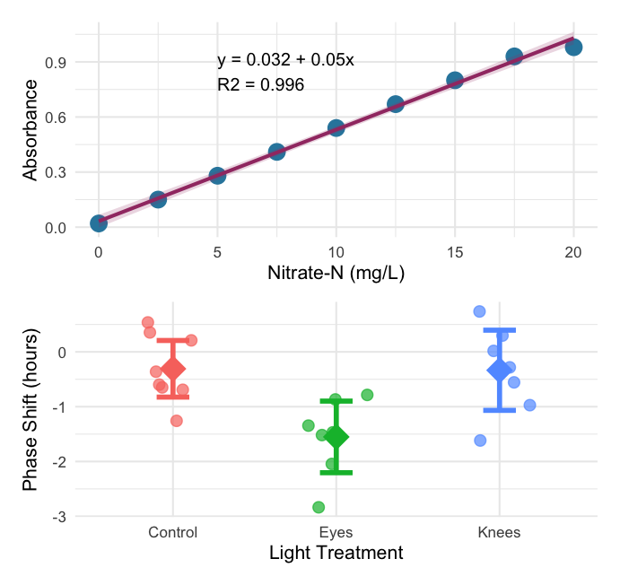
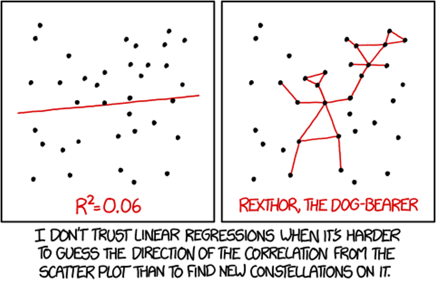
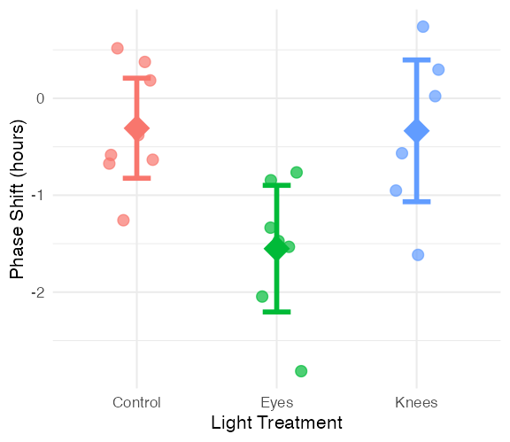
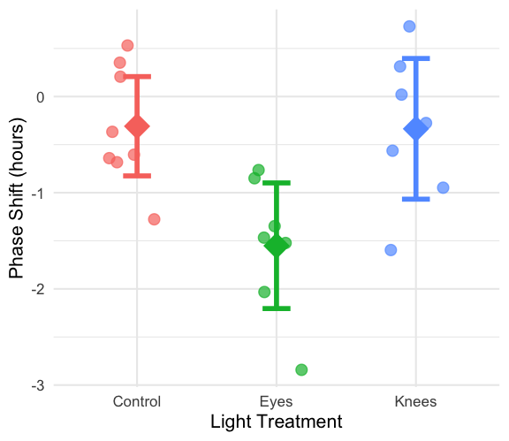
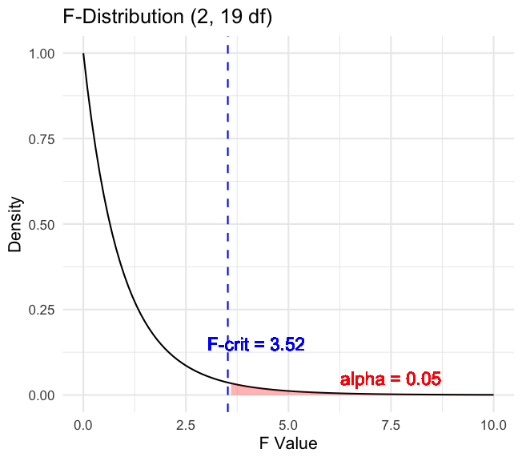
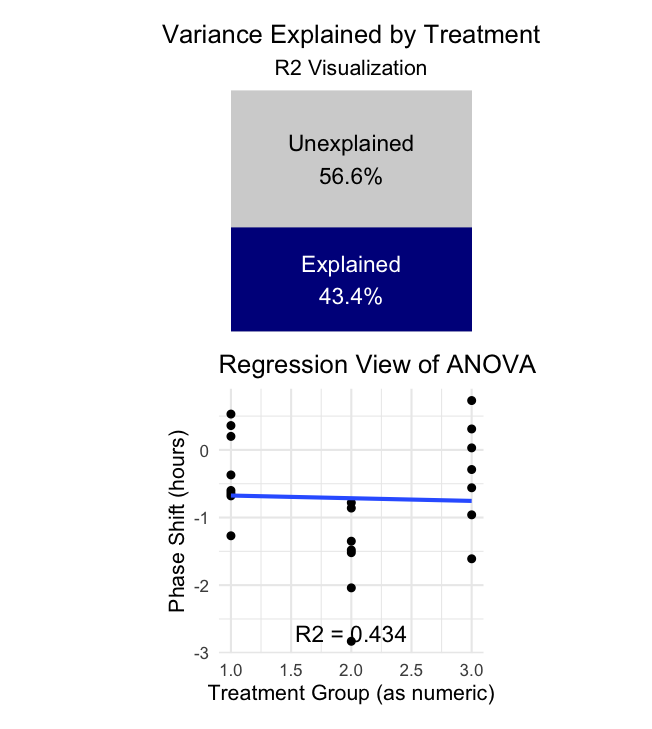
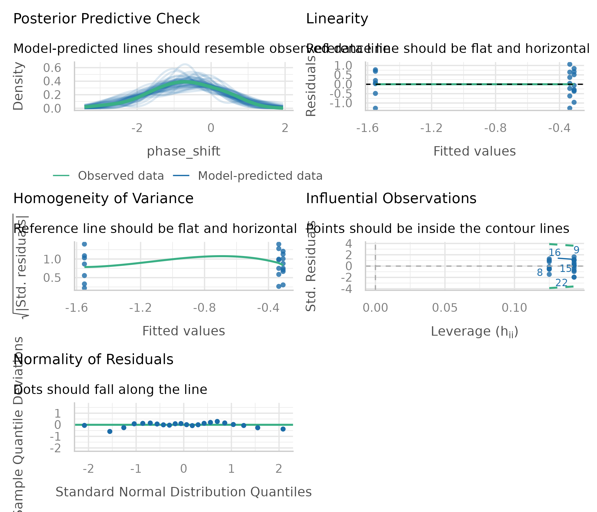
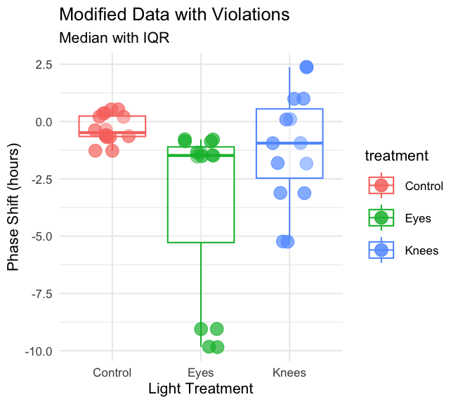
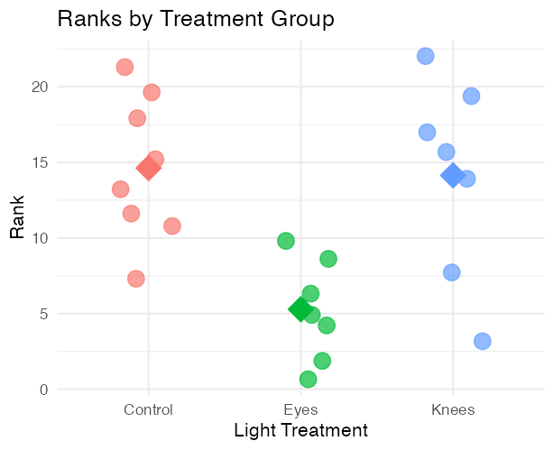
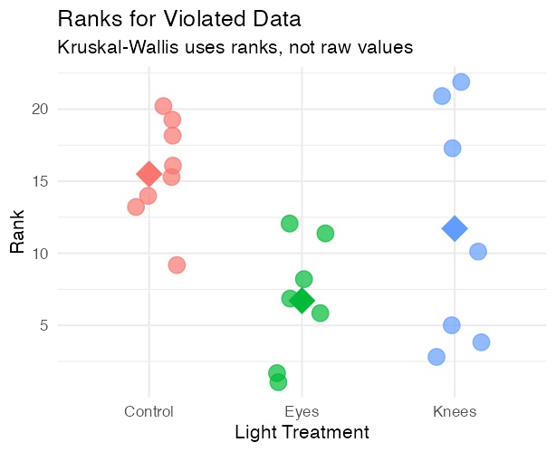

Lecture: Analysis of Variance (ANOVA)
Single-factor ANOVA
ANOVA
One-way ANOVA and its connection to regression: partitioning sums of squares, the F-ratio, assumptions and diagnostics, post-hoc testing, reporting, and non-parametric alternatives (Kruskal-Wallis, Dunn’s test) — on a circadian-rhythm light-treatment dataset.
Where We Left Off
Covered last time — Multiple Regression:
- The MLR model, regression parameters
- Analysis of variance for regression
- Null hypotheses, explained variance
- Assumptions and diagnostics
- Collinearity, interactions, dummy variables
- Model selection, importance of predictors
Note
✅ Key idea from last lecture
You already built an ANOVA table for a regression — you just called it “analysis of variance for regression.” Today we apply the exact same machinery to categorical predictors.

Part 1 · ANOVA Overview
Today’s Objectives
ANOVA: analysis of variance, single-factor today, multi-factor to come.
- Predictor variables: fixed
- The ANOVA model
- Analysis and partitioning of variance
- Null hypothesis
- Assumptions and diagnostics
- Post-hoc tests — Tukey and others
- Reporting the results
- Mixed-model ANOVA — random effects
Note
📖 Reference
Gotelli & Ellison, A Primer of Ecological Statistics, Ch. 10 — The Analysis of Variance, is the core reference for this lecture.
What if the response is continuous and the predictor(s) categorical?
| Continuous X | Categorical X | |
|---|---|---|
| Continuous Y | Regression | ANOVA |
| Categorical Y | Logistic regression |
Part 2 · ANOVA and Regression Connection
ANOVA and Regression Connection
Both regression and ANOVA:
- Partition the total variation in Y
- Use F-tests for significance, where one MS is divided by another
Regression:
- Form: \(Y = \beta_0 + \beta_1X + \varepsilon\) — Y is the response, β₀ the intercept, β₁ the slope, X the predictor, ε the error
- Test: \(H_0: \beta_1 = 0\) — rejecting means X significantly predicts Y
ANOVA:
- Form: \(Y_{ij} = \mu + A_i + \varepsilon_{ij}\) — \(Y_{ij}\) is observation j in group i, μ the grand mean, \(A_i\) the effect of group i, ε the error
- Test: \(H_0: \mu_1 = \mu_2 = ... = \mu_k\) — rejecting means at least one group differs
The Same Partitioning, Two Kinds of Predictor
General method for partitioning variation in a continuous dependent variable:
- One or more continuous (and categorical) predictors → regression
- One or more categorical predictors → ANOVA
- Categorical predictor variables represent groups or experimental treatments
ANOVA as Regression
Tip
ANOVA as regression
With one categorical variable, ANOVA is equivalent to regression with dummy variables. In fact, when we run ANOVAs we use the same code as for regression!
regression: model <- lm(response ~ predictor, data = df) anova: model <- lm(response ~ factor, data = df)

Part 3 · ANOVA Goals and Logic
ANOVA Goals
ANOVA aims to compare means of groups:
- Attributes contribution of predictors + “error” to variability
- Tests H₀ that population (random effects) or group (fixed effects) means are equal
- Single factor (1-way) and multifactor (2-, 3-way designs)
- Single factor: one factor with more than two levels
- Multifactor: two or three factors with two or more levels each — examines variation due to factors AND their interaction

Analysis of Variance
Analysis of variance is the most powerful approach known for simultaneously testing if the means of k groups are equal — it works by assessing whether individuals chosen from different groups are, on average, more different than individuals chosen from the same group.
The null hypothesis of ANOVA is that the population means μᵢ are the same for all treatments.
- H₀: μ₁ = μ₂ = … = μₖ
- H₁: at least one μᵢ is different from the others
Rejecting H₀ in ANOVA is evidence that the mean of at least one group is different from the others — it does not indicate which means differ.

ANOVA Logic
Even if all groups had the same true mean, the data would likely show different sample means for each group due to sampling error.
The key insight of ANOVA: we can estimate how much variation among group means ought to be present from sampling error alone if H₀ is true. ANOVA lets us determine whether there is more variance among the sample means than expected by chance alone. If so, we infer real differences among the population means.
Two key measures of variation are calculated and compared:
- Group mean square (\(MS_{groups}\)) — variation among subjects from different groups
- Error mean square (\(MS_{error}\)) — variation among subjects within the same group
\[F = \frac{MS_{groups}}{MS_{error}}\]

Part 4 · Partitioning the Sum of Squares
Partitioning the Sum of Squares
The total variation in Y can be expressed as a sum of squares:
\[SS_{total} = \sum_{i=1}^{a}\sum_{j=1}^{n}(Y_{ij} - \bar{Y})^2\]
This can be partitioned into two components:
- Among Groups (Treatment): \(SS_{among} = n\sum_{i=1}^{a}(\bar{Y}_i - \bar{Y})^2\)
- Within Groups (Error): \(SS_{within} = \sum_{i=1}^{a}\sum_{j=1}^{n}(Y_{ij} - \bar{Y}_i)^2\)
These components are additive: \(SS_{total} = SS_{among} + SS_{within}\)

A Worked Sum-of-Squares Example
Call:
lm(formula = phase_shift ~ treatment, data = circ_data)
Residuals:
Min 1Q Median 3Q Max
-1.27857 -0.36125 0.03857 0.61147 1.06571
Coefficients:
Estimate Std. Error t value Pr(>|t|)
(Intercept) -0.30875 0.24888 -1.241 0.22988
treatmentEyes -1.24268 0.36433 -3.411 0.00293 **
treatmentKnees -0.02696 0.36433 -0.074 0.94178
---
Signif. codes: 0 '***' 0.001 '**' 0.01 '*' 0.05 '.' 0.1 ' ' 1
Residual standard error: 0.7039 on 19 degrees of freedom
Multiple R-squared: 0.4342, Adjusted R-squared: 0.3746
F-statistic: 7.289 on 2 and 19 DF, p-value: 0.004472Analysis of Variance Table
Response: phase_shift
Df Sum Sq Mean Sq F value Pr(>F)
treatment 2 7.2245 3.6122 7.2894 0.004472 **
Residuals 19 9.4153 0.4955
---
Signif. codes: 0 '***' 0.001 '**' 0.01 '*' 0.05 '.' 0.1 ' ' 1
Important
Key connection to regression
This is the same partitioning we saw in regression analysis:
\[SS_{total} = SS_{regression} + SS_{residual}\]
- \(SS_{among}\) in ANOVA = \(SS_{regression}\) in regression
- \(SS_{within}\) in ANOVA = \(SS_{residual}\) in regression
Both measure how much variation is explained by our model vs. unexplained (error).
The ANOVA Table
The ANOVA table organizes all computations leading to a test of the null hypothesis of no differences among population means.
- Source of variation — what is being tested
- Sum of squares — total variation for each source
- df — degrees of freedom for each source
- Mean squares — sum of squares divided by df
- F-ratio — ratio of mean squares, used to test significance
- P-value — probability of observing our results if H₀ is true
Example: for a one-way ANOVA with 3 groups and 4 replicates per group: df(treatments) = a − 1 = 2, df(error) = a(n − 1) = 3(4 − 1) = 9, df(total) = an − 1 = 11
Call:
lm(formula = phase_shift ~ treatment, data = circ_data)
Residuals:
Min 1Q Median 3Q Max
-1.27857 -0.36125 0.03857 0.61147 1.06571
Coefficients:
Estimate Std. Error t value Pr(>|t|)
(Intercept) -0.30875 0.24888 -1.241 0.22988
treatmentEyes -1.24268 0.36433 -3.411 0.00293 **
treatmentKnees -0.02696 0.36433 -0.074 0.94178
---
Signif. codes: 0 '***' 0.001 '**' 0.01 '*' 0.05 '.' 0.1 ' ' 1
Residual standard error: 0.7039 on 19 degrees of freedom
Multiple R-squared: 0.4342, Adjusted R-squared: 0.3746
F-statistic: 7.289 on 2 and 19 DF, p-value: 0.004472Analysis of Variance Table
Response: phase_shift
Df Sum Sq Mean Sq F value Pr(>F)
treatment 2 7.2245 3.6122 7.2894 0.004472 **
Residuals 19 9.4153 0.4955
---
Signif. codes: 0 '***' 0.001 '**' 0.01 '*' 0.05 '.' 0.1 ' ' 1# A tibble: 3 × 4
treatment Mean SD N
<fct> <dbl> <dbl> <int>
1 Control -0.309 0.618 8
2 Eyes -1.55 0.706 7
3 Knees -0.336 0.791 7Comparing ANOVA and Regression Tables
Important
ANOVA table:
| Source | df | SS | MS | F | p |
|---|---|---|---|---|---|
| Treatment | a-1 | SS_treatment | MS_treatment | F | p |
| Error | a(n-1) | SS_error | MS_error | ||
| Total | a*n-1 | SS_total |
Is equivalent to an ANOVA table from a regression model:
| Source | df | SS | MS | F | p |
|---|---|---|---|---|---|
| Regression | k | SS_regression | MS_regression | F | p |
| Error | n-k-1 | SS_residual | MS_residual | ||
| Total | n-1 | SS_total |
Where k = number of predictor/dummy variables = a − 1, and a = treatment groups/levels of factors.
Part 5 · The F-Ratio
The F-Ratio
\[F = \frac{MS_{among}}{MS_{error}}\]
- Under H₀ (all means equal): the F-ratio should be approximately 1
- Larger F-ratios suggest among-group variance exceeds what’s expected by chance
- With the circadian rhythm data: F = 7.29, p = 0.004 — we reject H₀
- The F-ratio follows an F-distribution with (a − 1) and a(n − 1) df
# A tibble: 2 × 2
Metric Value
<chr> <dbl>
1 F-observed 7.29
2 F-critical (alpha = 0.05) 3.52
Connection of an F-Test to a T-Test
An ANOVA with two groups (a = 2) is equivalent to a t-test — why F = t²? Both test the same hypothesis: are the means of two groups different?
- The t-statistic: \(t = \frac{\bar{X}_1 - \bar{X}_2}{SE_{difference}}\) — measures how many standard errors apart the two means are, and can be + or −
- The F-statistic: \(F = \frac{MS_B}{MS_W}\) — the ratio of variance between groups to variance within groups
- Unlike t, F is always non-negative (it’s a ratio of squared quantities)
The mathematical connection:
- Both measure the same signal-to-noise ratio — numerators capture the difference between groups (signal), denominators capture variability within groups (noise)
- With two groups: \(MS_B\) relates directly to \((\bar{X}_1 - \bar{X}_2)^2\), and \(MS_W\) relates to the pooled variance
- Degrees of freedom match up too: t-test df = n₁ + n₂ − 2; F-test df₁ = 1 (numerator), df₂ = n₁ + n₂ − 2 (denominator)
- An F-distribution with df₁ = 1 is the square of a t-distribution with df₂
Why This Matters — ANOVA Generalizes the T-Test
- Shows ANOVA is actually a generalization of the t-test
- When a = 2, you get the same result either way
- But ANOVA extends naturally to comparing three or more groups — you can’t do that directly with a t-test without running into multiple-comparison problems
Using circ_data (Control vs Knees groups):
t-statistic: 0.0741
t^2: 0.0055
F-statistic: 0.0055
Difference (should be ~0): 0 F-Ratio, Confirmed on the Full Model
\[F = \frac{MS_{among}}{MS_{error}}\]
- Under H₀ (all means equal), the F-ratio should be ≈ 1
- Larger F-ratios suggest among-group variance exceeds chance
- With the circadian rhythm data: F₂,₁₉ = 7.29, p = 0.004 — we reject H₀
- The F-ratio follows an F-distribution with (a − 1) and a(n − 1) df
Call:
lm(formula = phase_shift ~ treatment, data = circ_data)
Residuals:
Min 1Q Median 3Q Max
-1.27857 -0.36125 0.03857 0.61147 1.06571
Coefficients:
Estimate Std. Error t value Pr(>|t|)
(Intercept) -0.30875 0.24888 -1.241 0.22988
treatmentEyes -1.24268 0.36433 -3.411 0.00293 **
treatmentKnees -0.02696 0.36433 -0.074 0.94178
---
Signif. codes: 0 '***' 0.001 '**' 0.01 '*' 0.05 '.' 0.1 ' ' 1
Residual standard error: 0.7039 on 19 degrees of freedom
Multiple R-squared: 0.4342, Adjusted R-squared: 0.3746
F-statistic: 7.289 on 2 and 19 DF, p-value: 0.004472Anova Table (Type II tests)
Response: phase_shift
Sum Sq Df F value Pr(>F)
treatment 7.2245 2 7.2894 0.004472 **
Residuals 9.4153 19
---
Signif. codes: 0 '***' 0.001 '**' 0.01 '*' 0.05 '.' 0.1 ' ' 1
Part 6 · Variance Explained — R²
Variance Explained: R²
R² summarizes the contribution of group differences to total variation:
\[R^2 = \frac{SS_{among}}{SS_{total}}\]
This is interpreted as the “fraction of the variation in Y that is explained by groups.” For the circadian rhythm data:
\[R^2 = \frac{7.224}{16.639} = 0.43\]
43% of the total variation in phase shift is explained by differences in light treatment, with the remaining 57% unexplained.
Connection to regression: this is exactly the same calculation as R² in regression, \(R^2 = SS_{regression}/SS_{total}\).

Part 7 · Assumptions and Diagnostics
ANOVA Assumptions
ANOVA has the same assumptions as the two-sample t-test, but applied to all k groups:
- Random samples from corresponding populations
- Normality — Y values are normally distributed in each population
- Homogeneity of variance — variance is the same in all populations
- Independence — observations are independent
Checking assumptions:
- Normality: QQ plots, histogram of residuals, Shapiro-Wilk test
- Homogeneity: plot residuals vs. predicted values or x-values
- Independence: examine the experimental design
If assumptions are violated: transform Y (e.g., log, square root), use robust or non-parametric alternatives, or use generalized linear models (GLMs).
The Four Standard Diagnostic Plots

Tip
🖐 Notice
These are the same four diagnostic views R gives you automatically from plot(model) — here built by hand with ggplot2 + broom::fortify() so we can style them consistently.
A Newer Way to Check — the performance Package

Note
✅ Key idea
check_model() from the performance package builds all the standard diagnostic panels — plus a few extra (e.g., collinearity) — in one call, with built-in guidance on what “good” looks like for each panel.
Levene’s Test
Levene’s test of homogeneity of variance.
- Null hypothesis: variances are homogeneous
- So you want a non-significant result here
Levene's Test for Homogeneity of Variance (center = median)
Df F value Pr(>F)
group 2 0.1586 0.8545
19 Shapiro-Wilk Test
Shapiro-Wilk normality test.
- Null hypothesis: the data are normally distributed
- So you want a non-significant result here
Shapiro-Wilk normality test
data: residuals(circ_model)
W = 0.95893, p-value = 0.468Part 8 · Post-Hoc Testing
ANOVA Post-Hoc Testing — Overview
When ANOVA rejects H₀, we need to determine which groups differ.
- Unplanned (post hoc) comparisons: used when no specific comparisons were planned; must adjust for multiple testing. Common methods: Tukey-Kramer, Bonferroni, Scheffé, Sidak
- Planned comparisons: have strong prior justification, use pooled variance from all groups, have higher precision than separate t-tests
- Example: Tukey’s HSD to compare all pairs of treatments in the circadian rhythm data
contrast estimate SE df t.ratio p.value
Control - Eyes 1.243 0.364 19 3.411 0.0079
Control - Knees 0.027 0.364 19 0.074 0.9970
Eyes - Knees -1.216 0.376 19 -3.231 0.0117
P value adjustment: tukey method for comparing a family of 3 estimates treatment emmean SE df lower.CL upper.CL .group
Eyes -1.551 0.266 19 -2.25 -0.855 a
Knees -0.336 0.266 19 -1.03 0.361 b
Control -0.309 0.249 19 -0.96 0.343 b
Confidence level used: 0.95
Conf-level adjustment: sidak method for 3 estimates
P value adjustment: tukey method for comparing a family of 3 estimates
significance level used: alpha = 0.05
NOTE: If two or more means share the same grouping symbol,
then we cannot show them to be different.
But we also did not show them to be the same. Post-Hoc Testing — Planned Comparisons
When ANOVA rejects H₀, we need to determine which groups differ.
- Unplanned (post hoc) comparisons: used when no specific comparisons were planned; must adjust for multiple testing. Common methods: Tukey-Kramer, Bonferroni, Scheffé
- Planned comparisons: have strong prior justification, use pooled variance from all groups, have higher precision than separate t-tests
- Example: using Tukey’s HSD to compare all pairs of treatments
[1] "Control" "Eyes" "Knees" contrast estimate SE df t.ratio p.value
control vs eyes 1.243 0.364 19 3.411 0.0029
control vs knees 0.027 0.364 19 0.074 0.9418Comparison of Post-Hoc Tests
The main post-hoc tests:
- Tukey-Kramer (HSD): compares all possible pairs of group means, controls family-wise error rate, most powerful when comparing ALL pairwise combinations
- Bonferroni: adjusts α by dividing by the number of comparisons (α/k); very conservative; best for a small number of planned comparisons
- Sidak: similar to Bonferroni but slightly less conservative: 1−(1−α)^(1/k); gives slightly more power
- Dunnett’s Test: specifically for comparing treatment groups to a control; more powerful than the others for that specific job
The key tradeoff is between power (detecting real differences) and Type I error control (avoiding false positives). More conservative tests give better error control but less power.
tukey_result <- emmeans(circ_model, "treatment") |>
pairs(adjust = "tukey")
bonferroni_result <- emmeans(circ_model, "treatment") |>
pairs(adjust = "bonferroni")
sidak_result <- emmeans(circ_model, "treatment") |>
pairs(adjust = "sidak")
dunnett_result <- emmeans(circ_model, "treatment") |>
contrast(method = "trt.vs.ctrl", ref = 1, adjust = "dunnett")
all_methods <- bind_rows(
summary(tukey_result) |>
as_tibble() |>
select(contrast, estimate, SE, p.value) |>
mutate(Method = "Tukey"),
summary(bonferroni_result) |>
as_tibble() |>
select(contrast, estimate, SE, p.value) |>
mutate(Method = "Bonferroni"),
summary(sidak_result) |>
as_tibble() |>
select(contrast, estimate, SE, p.value) |>
mutate(Method = "Sidak")
)
all_methods |>
select(contrast, Method, p.value) |>
pivot_wider(names_from = Method, values_from = p.value) |>
arrange(Tukey)# A tibble: 3 × 4
contrast Tukey Bonferroni Sidak
<chr> <dbl> <dbl> <dbl>
1 Control - Eyes 0.00787 0.00879 0.00877
2 Eyes - Knees 0.0117 0.0132 0.0131
3 Control - Knees 0.997 1 1.000 Post-Hoc Visualization
When ANOVA rejects H₀, we need to determine which groups differ.
- Unplanned comparisons: used when no specific comparisons were planned; must adjust for multiple testing. Common methods: Tukey-Kramer, Bonferroni, Scheffé
- Planned comparisons: have strong prior justification, use pooled variance, higher precision than separate t-tests
- Example: Tukey’s HSD to compare all pairs of treatments

Significance Groups Plot
When ANOVA rejects H₀, we need to determine which groups differ.
- Unplanned comparisons: used when no specific comparisons were planned; must adjust for multiple testing. Common methods: Tukey-Kramer, Bonferroni, Scheffé
- Planned comparisons: have strong prior justification, use pooled variance, higher precision than separate t-tests
- Example: Tukey’s HSD to compare all pairs of treatments

Part 9 · Reporting Results
Reporting ANOVA Results
Formal scientific writing example:
“The effect of light treatment on circadian rhythm phase shift was analyzed using a one-way ANOVA. There was a significant effect of treatment on phase shift (F(2, 19) = 7.29, p = 0.004, η² = 0.43). Post-hoc comparisons using Tukey’s HSD test indicated that the mean phase shift for the Eyes treatment (M = −1.55 h, SD = 0.71) was significantly different from both the Control treatment (M = −0.31 h, SD = 0.62) and the Knees treatment (M = −0.34 h, SD = 0.79). However, the Control and Knees treatments did not significantly differ from each other. These results suggest that light exposure to the eyes, but not to the knees, impacts circadian rhythm phase shifts.”
Note
Key ANOVA principles
- Compares means across multiple groups simultaneously
- Both ANOVA and regression are special cases of the General Linear Model — ANOVA with categorical predictors = regression with dummy variables
- Both partition variance into explained and unexplained components: \(SS_{Total} = SS_{Between} + SS_{Within}\)
- Fixed effects target specific groups of interest (most common); random effects sample from a larger population
Part 10 · Non-Parametric Alternatives
Overview of Non-Parametric Tests
Common non-parametric alternatives to ANOVA — these make fewer assumptions about the data distribution.
- Kruskal-Wallis test — non-parametric alternative to one-way ANOVA; tests for differences in median ranks; works with ordinal or continuous data. Assumptions: independent observations, similar distribution shapes
- Mood’s median test (not covered here) — tests whether medians differ across groups; more robust but less powerful than Kruskal-Wallis; good for highly skewed data
When to use non-parametric tests:
- Small sample sizes
- Heavily skewed data
- Legitimate outliers present
- Very unequal variances
- Ordinal (ranked) data
- Assumption checks clearly fail
Trade-offs: fewer assumptions and more robust to outliers, but less statistical power and testing medians/ranks rather than means.
The Kruskal-Wallis H Test
The most common non-parametric alternative to one-way ANOVA.
What it does: ranks all observations from smallest to largest, compares the sum of ranks between groups, tests if groups come from the same distribution.
Hypotheses: H₀ — all groups have the same distribution (same median); H₁ — at least one group differs.
Test statistic:
\[H = \frac{12}{N(N+1)} \sum_{i=1}^{k} n_i (\bar{R}_i - \bar{R})^2 - 3(N+1)\]
Where N = total sample size, k = number of groups, \(\bar{R}_i\) = mean rank for group i, \(\bar{R}\) = overall mean rank = (N+1)/2, nᵢ = sample size for group i. Distribution approximated by χ² with (k−1) df.
Assumptions of Kruskal-Wallis — much more relaxed than parametric ANOVA:
- Independence — same as parametric ANOVA, still critical
- Similar distribution shapes — groups should have similar spread/variance; if violated, interpret as differences in distributions generally, not just medians
- Ordinal or continuous data
What’s NOT assumed: normal distribution, equal variances (though it helps interpretation), a specific distribution shape.
Demonstrating Assumption Violations
Creating a modified dataset with clear violations:
set.seed(42)
violated_circ_df <- circ_data %>%
mutate(
phase_shift_violated = case_when(
treatment == "Control" ~ phase_shift,
treatment == "Knees" ~ phase_shift * 3.25,
treatment == "Eyes" ~ {
n <- length(phase_shift)
c(phase_shift[1:(n-2)], phase_shift[(n-1):n] - 7)
}
)
)
violated_model <- lm(phase_shift_violated ~ treatment,
data = violated_circ_df)What we changed: increased variance in the Knees group, added extreme outliers to the Eyes group, creating unequal variances and non-normality.

Checking Violated-Data Assumptions — Normality
Clear violation: p < 0.05, points deviate from the line.
Shapiro-Wilk normality test
data: resid(violated_model)
W = 0.89473, p-value = 0.02335
Checking Violated-Data Assumptions — Variance
Clear violation: p < 0.05, unequal variances evident.
Levene's Test for Homogeneity of Variance (center = median)
Df F value Pr(>F)
group 2 1.5618 0.2355
19 
Performing the Kruskal-Wallis Test — Original Data
Even though assumptions are met, let’s compare results:
kruskal_original_result <- kruskal.test(
phase_shift ~ treatment,
data = circ_data)
kruskal_original_result
Kruskal-Wallis rank sum test
data: phase_shift by treatment
Kruskal-Wallis chi-squared = 9.4231, df = 2, p-value = 0.008991Interpretation: H = test statistic (χ² approximation); df = k − 1 = 2; p = 0.0135 (significant at α = 0.05); conclusion: at least one group differs.
Compare to parametric ANOVA:
Analysis of Variance Table
Response: phase_shift
Df Sum Sq Mean Sq F value Pr(>F)
treatment 2 7.2245 3.6122 7.2894 0.004472 **
Residuals 19 9.4153 0.4955
---
Signif. codes: 0 '***' 0.001 '**' 0.01 '*' 0.05 '.' 0.1 ' ' 1How Kruskal-Wallis works:

# A tibble: 3 × 4
treatment mean_rank sum_rank n
<fct> <dbl> <dbl> <int>
1 Control 14.6 117 8
2 Eyes 5.29 37 7
3 Knees 14.1 99 7Kruskal-Wallis on Violated Data
Non-parametric test handles violations:
kruskal_violated_result <- kruskal.test(
phase_shift_violated ~ treatment,
data = violated_circ_df)
kruskal_violated_result
Kruskal-Wallis rank sum test
data: phase_shift_violated by treatment
Kruskal-Wallis chi-squared = 6.8453, df = 2, p-value = 0.03263Analysis of Variance Table
Response: phase_shift_violated
Df Sum Sq Mean Sq F value Pr(>F)
treatment 2 41.806 20.9029 2.8361 0.0836 .
Residuals 19 140.037 7.3704
---
Signif. codes: 0 '***' 0.001 '**' 0.01 '*' 0.05 '.' 0.1 ' ' 1Key observations: both tests still detect differences; Kruskal-Wallis is more robust to violations; the parametric test may give misleading results when assumptions are violated; the non-parametric test maintains validity.

Why Kruskal-Wallis is robust: uses ranks instead of raw values, outliers affect ranks minimally, unequal variances are less problematic, no distribution assumptions are needed.
Post-Hoc Tests for Kruskal-Wallis — Pairwise Wilcoxon
Just like ANOVA, we need post-hoc tests to identify which groups differ:
Pairwise comparisons using Wilcoxon rank sum exact test
data: nonparam_circ_df$phase_shift and nonparam_circ_df$treatment
Control Eyes
Eyes 0.0037 -
Knees 1.0000 0.0787
P value adjustment method: bonferroni Interpretation of p-values: Control vs Eyes: p = 0.024 (significant); Control vs Knees: p = 1.000 (not significant); Eyes vs Knees: p = 0.078 (not significant).
Common adjustment methods: "bonferroni" (most conservative), "holm" (less conservative), "BH" (Benjamini-Hochberg, controls false discovery rate), "none" (not recommended).
pairwise_violated_result <- pairwise.wilcox.test(
x = violated_circ_df$phase_shift_violated,
g = violated_circ_df$treatment,
p.adjust.method = "bonferroni"
)
pairwise_violated_result
Pairwise comparisons using Wilcoxon rank sum exact test
data: violated_circ_df$phase_shift_violated and violated_circ_df$treatment
Control Eyes
Eyes 0.0037 -
Knees 1.0000 1.0000
P value adjustment method: bonferroni Original Data Pairwise p-values:
Control vs Eyes: 0.024 *
Control vs Knees: 1.000
Eyes vs Knees: 0.078Violated Data Pairwise p-values:
Control vs Eyes: 0.015 *
Control vs Knees: 1.000
Eyes vs Knees: 0.015 *Dunn’s Test — an Alternative Post-Hoc
Dunn’s test is specifically designed for Kruskal-Wallis post-hoc comparisons:
dunn_original_result <- dunnTest(
phase_shift ~ treatment,
data = circ_data,
method = "bonferroni")
dunn_original_result Comparison Z P.unadj P.adj
1 Control - Eyes 2.7789287 0.005453849 0.01636155
2 Control - Knees 0.1434629 0.885924641 1.00000000
3 Eyes - Knees -2.5517789 0.010717452 0.03215236Advantages: designed specifically for Kruskal-Wallis, provides Z-statistics in addition to p-values, multiple adjustment methods available, more appropriate than multiple Wilcoxon tests. A Z-statistic tells you how many standard deviations a difference is from the expected value (usually zero, “no difference”).
dunn_violated_result <- dunnTest(
phase_shift_violated ~ treatment,
data = violated_circ_df,
method = "bonferroni"
)
dunn_violated_result Comparison Z P.unadj P.adj
1 Control - Eyes 2.614212 0.008943349 0.02683005
2 Control - Knees 1.126449 0.259975463 0.77992639
3 Eyes - Knees -1.440520 0.149720243 0.44916073Interpreting Z-statistics: large |Z| values indicate bigger differences; Z > 1.96 is approximately equivalent to p < 0.05; the sign indicates the direction of the difference.
Which Post-Hoc Test Should You Use?
- Use Dunn’s test because it’s the proper follow-up to Kruskal-Wallis, maintains consistency with the overall K-W ranking, is more statistically appropriate for the omnibus test you ran, and is standard in published research
- Wilcoxon is fine for simple two-group comparisons, but once you’ve run Kruskal-Wallis (a 3+ group test), Dunn’s is the standard choice
Tip
🖐 Notice
Kruskal-Wallis ranks ALL your data once. Dunn’s test uses those same ranks. Pairwise Wilcoxon throws away that information and re-ranks separately for each pair.
Reporting Non-Parametric Results
Essential elements to include: test name and purpose, sample sizes per group, medians and IQRs (not means and SDs!), test statistic (H) and degrees of freedom, p-value, effect size, post-hoc test results, conclusion.
Example write-up: “A Kruskal-Wallis test was conducted to compare the effect of light treatment on circadian rhythm phase shift across three groups: Control (n = 8), Knees (n = 7), and Eyes (n = 7). Median phase shifts were −0.48 hours (IQR = 0.84) for Control, −0.29 hours (IQR = 1.04) for Knees, and −1.48 hours (IQR = 0.66) for Eyes. The test revealed a statistically significant difference in phase shift between the groups, H(2) = 8.66, p = 0.013, ε² = 0.37. Post-hoc pairwise comparisons using Dunn’s test with Bonferroni correction indicated that the Eyes treatment differed significantly from Control (p = 0.024), but no other pairwise differences were significant.”
In-text citation format:
The Kruskal-Wallis test revealed significant differences between treatment groups, H(2) = 8.66, p = .013.
Warning
⚠️ Common mistakes to avoid
- Reporting means instead of medians, using SD instead of IQR
- Not mentioning it’s a non-parametric test
- Not justifying why a non-parametric test was used
Reporting — the Table Format
Table 1. Descriptive Statistics for Phase Shift by Treatment
Note. IQR = interquartile range.
Kruskal-Wallis H(2) = 8.66, p = .013# A tibble: 3 × 6
treatment n Median IQR Min Max
<fct> <int> <dbl> <dbl> <dbl> <dbl>
1 Control 8 -0.485 0.89 -1.27 0.53
2 Eyes 7 -1.48 0.675 -2.83 -0.78
3 Knees 7 -0.29 0.93 -1.61 0.73